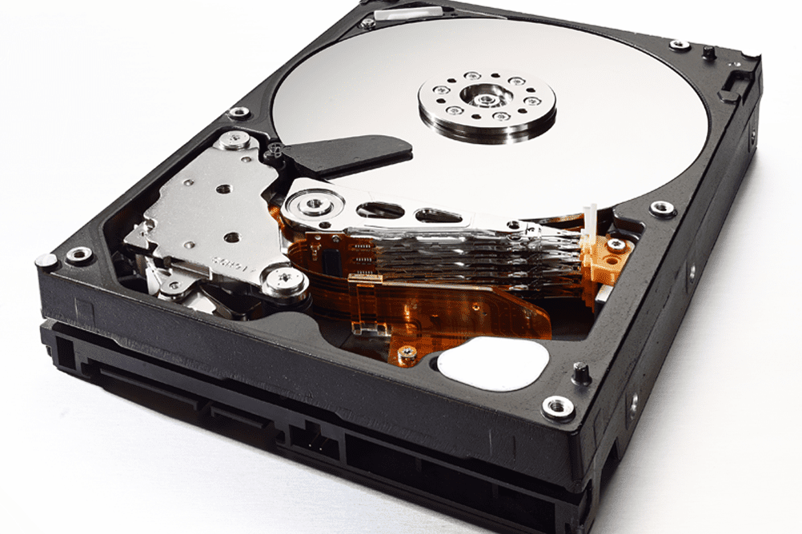

| Компьютер: устройство и программное обеспечение | |
|---|---|
| Меню: | Компьютерная память |
Компьютерная память — часть вычислительной машины, физическое устройство или среда для приема, хранения и выдачи данных, используемых при вычислении в течение определенного времени. Оперативная память — память с произвольным доступом — это быстрое запоминающее устройство, непосредственно связанное с процессором и предназначенное для записи, считывания и хранения выполняемых программ и данных. Оперативная и кэш-память является энергозависимыми — данные хранятся в них временно —до выключения электропитания компьютера, причем для динамической памяти (в отличие от статической) требуется постоянное обновление (регенерация) данных. Наиболее распространенным типом схем памяти являются DRAM (динамическая память).В этих воспоминаниях значение каждого бита хранится в крошечном конденсаторе. Эти конденсаторы разряжаются — и очень быстро, примерно через 1 мс — поэтому их содержимое может быть потеряно. Для предотвращения этого специальные цепи периодически перезаряжают конденсаторы. Название памяти, «динамическая», происходит от этого непрерывного процесса перезарядки. Оперативная память современного компьютера разделена на несколько типов. Хотя в основе всех типов памяти лежит обычная ячейка памяти - транзистор и конденсатор. Благодаря различным внешним интерфейсам и устройствам взаимодействия с компьютером модули памяти они все же отличаются друг от друга. Это наиболее дешевый способ производства ячеек памяти. Состояние конденсатора определяет, содержит ячейка «0» или «1», но само наличие конденсатора является причиной некоторых ограничений динамической памяти. Заряженный конденсатор эквивалентен логической «1», разряженный — логическому «0». Однако впоследствии конденсатор разряжается, и поэтому необходимо время от времени обновлять его заряд. Необходимый для этого ток очень мал, так что нужно немного времени, чтобы конденсатор небольшой емкости был заряжен снова. Но во время этого процесса к ячейке памяти обращаться нельзя. Производители динамической памяти говорят, что подобное восстановление должно проводиться каждые 64мс. Но самая большая проблема с оперативной памятью в том, что при операции считывания из ячейки конденсатор теряет свой заряд, то есть считывание деструктивное, и ячейка после считывания информации должна быть восстановлена. Таким образом, каждый раз при считывании информации должна проводиться и его запись. В результате увеличивается время циклического доступа, и повышается латентность. Латентность — это простой в работе или это время, затрачиваемое на считывание из памяти одного слова данных (восьми байт) (измеряется в циклах). Чем ниже латентность оперативной памяти, тем меньше центральный процессор будет находиться в состоянии простоя. Полная латентность состоит из программной и аппаратной составляющих. В модулях статической памяти такая проблема отсутствует. Одна ячейка статической памяти состоит из 4 транзисторов и двух резисторов, и в ячейке SRAM сохраняют данные не путем емкостной зарядки (как в DRAM), а путем переключения транзисторов в нужное состояние, подобно транзисторам в CPU. В отличие от динамической памяти — статическая память не является деструктивной. Ячейка статической памяти (кэш памяти) состоит из 4-х транзисторов и 2-х резисторов.Жесткий диск (жесткие диски (HDD) + «винчестер») — устройство для хранения информации, в котором используется принцип магнитной записи.  Внутри этого носителя запись данных осуществляется на жесткие пластины, изготовленные из легкого металлического сплава или стекла и покрытые слоем специального магнитного материала (чаще всего — двуокисью хрома). В зависимости от конструкции, в устройстве могут использоваться одна или несколько таких пластин, которые быстро вращаются на одной оси. За счет вращения создается своеобразный подпор воздуха, благодаря которому считывающие головки не касаются поверхности пластин, хотя и находятся очень близко к ним (всего несколько микрометров). Это гарантирует надежность записи / считывания данных. При остановке пластин, головки перемещаются за пределы их поверхности, поэтому механический контакт между головками и пластинами практически исключен. Такая конструкция обеспечивает долговечность запоминающих устройств этого типа.Вопросы и задания 1. Постарайтесь объяснить, зачем компьютеру нужны два вида памяти: внутренняя и внешняя. Подготовьте сообщение. 2. Что такое принцип хранимой программы? 3. В чем заключается свойство дискретности внутренней памяти компьютера? 4. Какие два значения имеет слово «бит»? Как они связаны между собой? 5. В чем заключается свойство адресуемости внутренней памяти компьютера? 6. Что представляет собой машинная программа? Какая информация содержится в команде программы? 7. Назовите устройства внешней памяти компьютера и сделайте их фотографии. 8. Какие типы оптических дисков вы знаете? Выполните задания теста:(вводите в окно ввода цифру правильного ответа)1.Память компьютера делится на: 1)Оперативную и внутреннюю; 2)Внешнюю и внутреннюю; 3)Внешнюю и долговременную; 2. Внутренняя память необходима: 1)Для хранения программ и данных в текущем сеансе работы компьютера 2)Для обработки информации 3)Для долговременного хранения информации 3. Жёсткий диск является 1)внешней памятью компьютера 2)внутренней памятью компьютера 3)оперативным запоминающим устройством |
|
Все права защищены Яковлевым Т. и Каримовым С. ООО "The worst company in the world" |
|